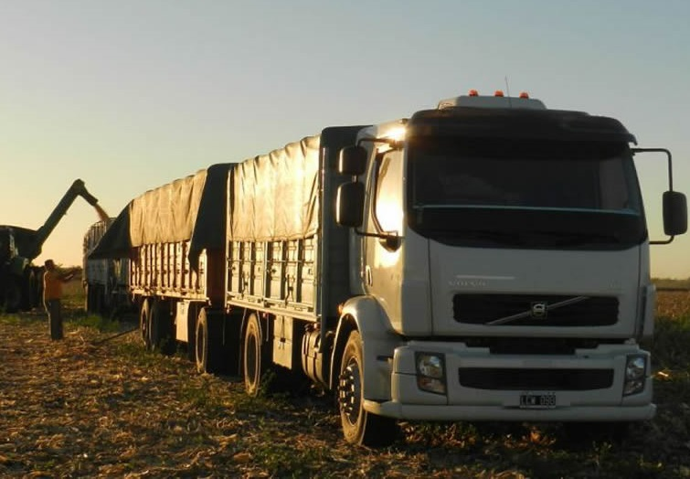

Transportes Don Ramon
Soluciones
- -Transporte de cargas generales desde y hacia cualquier rincon del Uruguay.
- -Transportamos todo tipo de cargas en tránsito.
- -Proveemos de servicios flexibles, creativos y confiables.
- -Frente a todas sus necesidades de transporte, con monitoreo satelital permanente de las mismas, creando experiencias libres de contratiempos.
- -Experiencia única: Más de 75 años en el mercado del transporte de cargas nacionales e internacionales.
- -Nuestros vehiculos cuentan con seguro de carga para la tranquilidad de nuestros clientes:
- Seguro por un total de U$S50.000 en caso de accidentes
- -Nos adaptamos a las necesidades de nuestros clientes: Nuestros servicios incluyen, carga de animales, granos y otros.

Rio Negro, Uruguay 2007